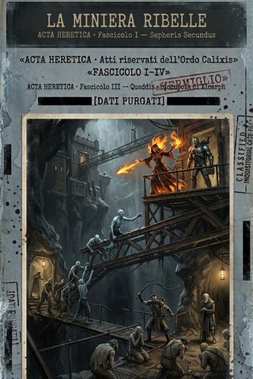
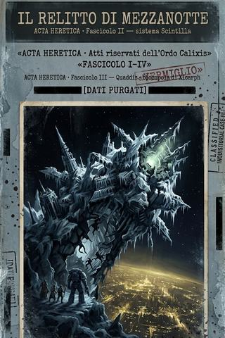
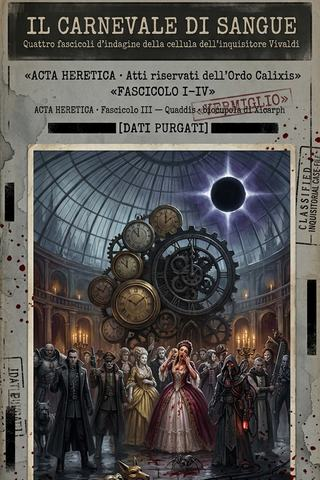
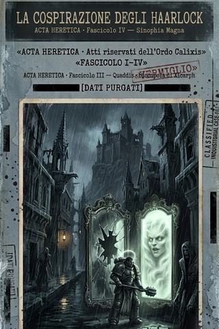
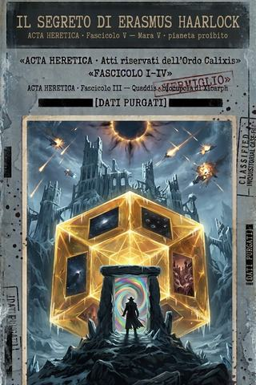

Fascicolo I
La miniera ribelle
Fascicolo I: le Catene Spezzate, il barone dato per morto e il redivivo Morriv, nelle miniere-schiavitù di Sepheris Secundus. Verbale del sapiente Eruditus, Ordo Hereticus.

Fascicolo II
Il relitto di Mezzanotte
Fascicolo II: un relitto colossale in rotta di collisione col mondo capitale, e la reliquia di un'inquisitrice morta da seicento anni. Verbale del sapiente Eruditus, Ordo Hereticus.

Fascicolo III
Il carnevale di sangue
Fascicolo III: sotto i tredici rintocchi dell'orologio d'acciaio, il Vedovo, la stella tiranno e la prima traccia del Viaggiatore. Verbale del sapiente Eruditus, Ordo Hereticus.

Fascicolo IV
La cospirazione degli Haarlock
Fascicolo IV: lo specchio in tredici frammenti, la corruzione dell'Arbites e il demone dietro il vetro, su Sinophia Magna. Verbale del sapiente Eruditus, Ordo Hereticus.

Fascicolo V
Il segreto di Erasmus Haarlock
Fascicolo V: sul pianeta proibito Mara, sotto un penitenziario di ghiaccio, l'ipercubo cieco apre porte su futuri che non dovrebbero esistere — e il Viaggiatore è alla soglia. Verbale del sapiente Eruditus, Ordo Hereticus. Il fascicolo si interrompe: l'arco resta aperto.